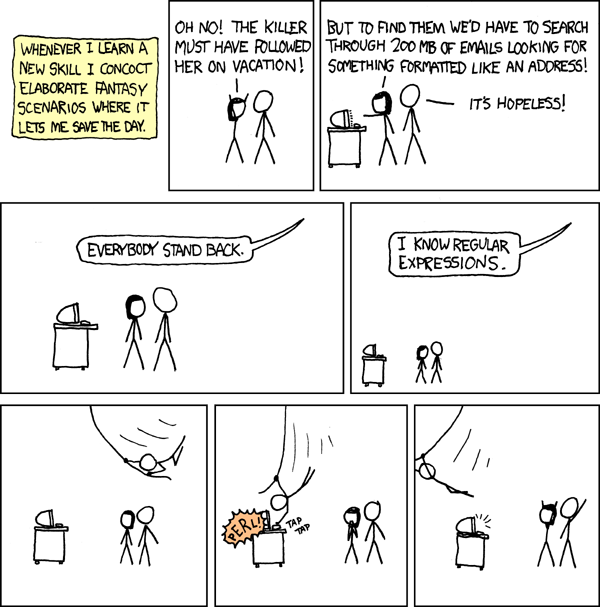
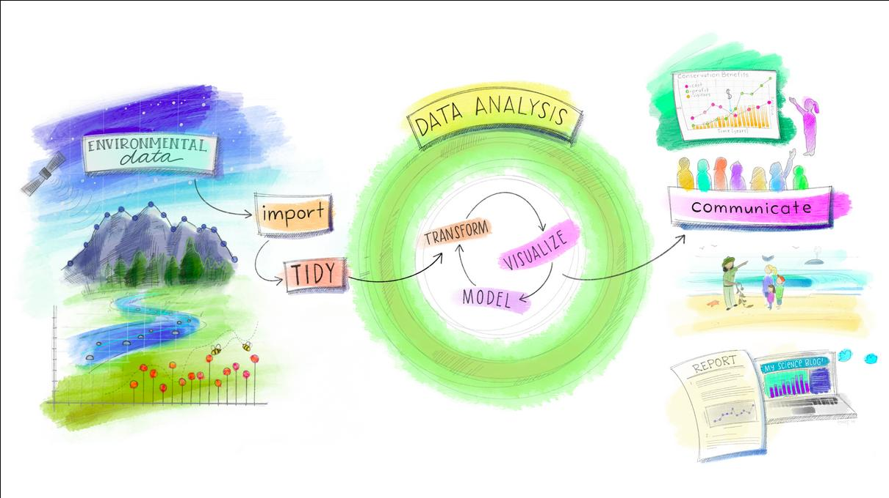

Semaine 9
Objectif de cette semaine:
Comprendre comment utiliser les principaux packages pour importer des données à partir de divers formats de fichiers et directement à partir de sites web!
Si le temps le permet, nous toucherons également aux expressions régulières.
1. Lectures
1.1 Chapitre 2 de Introduction to the Tidyverse
Veuillez lire à partir de la section 2.2. Vous pouvez sauter la section 2.15 qui touche au package googledrive.
1.2 Brève introduction aux expressions régulières
Les expressions régulières sont communément appelées regex ou regexp pour regular expressions en anglais. Selon Wikipédia, une expression régulière est “une chaîne de caractères, qui décrit, selon une syntaxe précise, un ensemble de chaînes de caractères possibles”. Si vous n’avez jamais entendu parlé des regex, il se peut que cette définition ne vous aide pas à comprendre le concept. Dans le texte ci-bas, nous tenterons de démystifier le tout.
En résumé, ces expressions permettent de décrire des motifs (patterns) à l’aide de formules “relativement simples” pour trouver, valider, extraire ou modifier du texte ou des nombres. L’utilisation d’expressions régulières sur le Web est omniprésente, sans que vous ne le sachiez, par exemple lorsqu’on veut valider nos réponses dans un formulaire et que l’engin nous dit que notre âge devrait contenir que des chiffres et non des lettres ou simplement pour valider une adresse de courriel.
En fait, vous avez probablement déjà utilisé certains principes lors de vos recherches sur internet ou dans un catalogue de la bibliothèque. Par exemple, si vous recherchez un certain mot, vous pouvez appliquer la méthode de la troncature pour remplacer toutes les terminaisons possibles d’une racine avec * ou remplacer une lettre ou un chiffre au sein d’un mot avec ?. Par exemple, la recherche avec le mot social vs socia* vs socia? ne donnerait pas nécessairement les mêmes résultats puisque socia* pourrait prendre beaucoup de formes différentes, par exemple, social, socialement, sociaux, etc.
Les expressions régulières sont également très utilisée, sans surprise, par les programmeurs et de plus en plus en science des données. Ce n’est pas tout le monde qui connait les expressions régulières, mais dès qu’on maitrise la base, il est difficile de faire autrement. Il s’agit d’une des meilleures qualités qu’un scientifiques des données possède, car cela permet de sauver beaucoup de temps! C’est une connaissance capitale lorsque vient le temps de nettoyer des données et d’extraire certaines informations clées.
Voici un classique de xkcd.

À titre d’exemples d’utilisation essentielle sont les fameux vérificateurs de “sécurité” de mots de passe. Considérez ces consignes:
Pour être considéré sécuritaire, votre mot de passe doit contenir:
Au moins 8 caractères
Au moins 1 chiffre
Au moins 1 minuscule (a-z)
Au moins 1 majuscue (A-Z)
Au moins 1 caractère spécial (! @ # $)Une expression régulière qui permet de valider un mot de passe de la sorte est ^(?=.*\d)(?=.*[a-z])(?=.*[A-Z])(?=.*\W).{8,}$. Cette expression parait drôlement compliquée et elle l’est! Il y a beaucoup de patterns à vérifier. Heureusement, les regex que nous utilisons avec nos données sont “rarement” aussi compliquées. Pensez par exemple à extraire des numéros de téléphone, des codes d’aéroport, certains mots précis, etc.
Le chapitre 11 de Programmer avec R mentionne les outils
grep,sed, etawkqui sont très puissants. Cependant, pour le cours, nous nous concentrerons sur les concepts de base et expressions utiles dans R.
Composition d’une expression régulière
Lorsque nous voulons construire une expression régulière, notre but de créer un “modèle” qui permettra de trouver les portions de chaines de caractères qui lui correspond. C’est un outil très puissant, mais qui peut nous causer quelques maux de tête si on essaie de créer une expression sans trop savoir ce que représente les différents caractères ou ensembles de caractères.
Comme dans la construction d’une fonction, nous pouvons créer l’expression de façon graduelle à l’aide de sous-expressions. Par contre, avant de créer, il faut connaitre ou, du moins, avoir une idée de l’existence des différentes possibilités. À se rappeler qu’une expression régulière n’est qu’un langage de description d’une chaine de texte.
Syntaxe de base
Il y a plusieurs règles ou principes de base lorsque nous composons des expressions régulières. Voici les principales règles:
Un caractère littéral correspond à la première occurrence de ce caractère dans la chaine de texte ciblée.
Une expression régulière peut être formée par une ou plusieurs expressions régulières combinées. Elle correspond alors à toute chaine de texte qui correspond aux sous-expressions. Autrement dit, les composantes d’une expression régulière sont par défaut reliées par une clause
« et ».
Si nous voulons trouver un mot textuellement dans un texte, le plus simple est d’écrire les caractères littéraux en guise d’expression.
Par exemple, l’expression soir fonctionnerait autant dans soir, bonsoir et soirée.
Voici les principaux opérateurs et leur fonction
.-
Le
.(point) peut prendre n’importe quel caractère sauf “”. Il s’agit du wildcard le plus utilisé. ?-
le caractère précédent apparait 0 ou 1 fois seulement.
*-
le caractère précédent apparait 0 ou plusieurs fois.
+-
le caractère précédent apparait 1 ou plusieurs fois.
{n}-
le caractère précédent apparait exactement n fois.
{n,m}-
le caractère précédent apparait au moins n fois et pas plus de m fois.
[agd]-
le caractère est un de ceux indiqués dans les [ ].
[^agd]-
le caractère n’est pas de ceux indiqués dans les [ ].
[c-e]-
le - à l’intérieur des [ ] indique une plage de caractères ou de chiffres. Dans l’exemple, le caractère doit être c, d ou e.
()-
Les ( ) regroupent plusieurs caractères en une entité.
|(pipe)-
Opérateur logique OU, comme dans R!
^-
Débute la chaine de caractères.
$-
Termine la chaine de caractères.
Sous-expressions les plus communes:
.*-
correspond à une chaine de caractères quelconques de longueur arbitraire, y compris zéro.
.+-
correspond à une chaine de caractères quelconques longue d’au moins un caractère ; équivalent à
..* .?-
correspond à aucun ou un seul caractère quelconque.
[a-z]et[A-Z]-
correspondent à l’alphabet en minuscule et majuscule respectivement, sans accents.
[0-9]-
correspond aux entiers de 0 à 9.
Évidemment, il y en a beaucoup plus. Heureusement, il y a une cheatsheet qui a été traduite en français pour nous aider à se rappeler des opérations les plus courantes.
Dans ce document, vous verrez qu’on regroupe les différents opérateurs selon leur fonction, soit métacaractères, Classes et Groupes de caractères, Ancres, Quantifieurs, etc.
📓 Aide-mémoire pour les regex en français créé par Ian Kopacka et traduit par Ahmadou Dicko (CC BY)
2. Module 5
Le module 5 est relativement simple à compléter, veuillez tout simplement remplir le questionnaire qui se trouve au https://fas1002-m02.formr.org/. Il est important de remplir le questionnaire avec le même code d’identification qu’au début de la session, car nous nous amuserons avec les données au prochain cours!

Figure par @allison_horst (CC-BY)
---
Cours
Vous pouvez télécharger les fichiers suivants:
| CSV | TSV |
|---|---|
| data_1.csv | data_1.tsv |
| data_2.csv | data_2.tsv |
| data_3.csv | data_3.tsv |
| data_4.csv | data_4.tsv |
Bonne semaine! ✌️